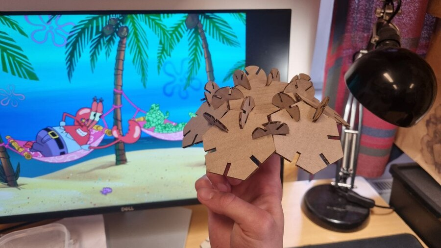
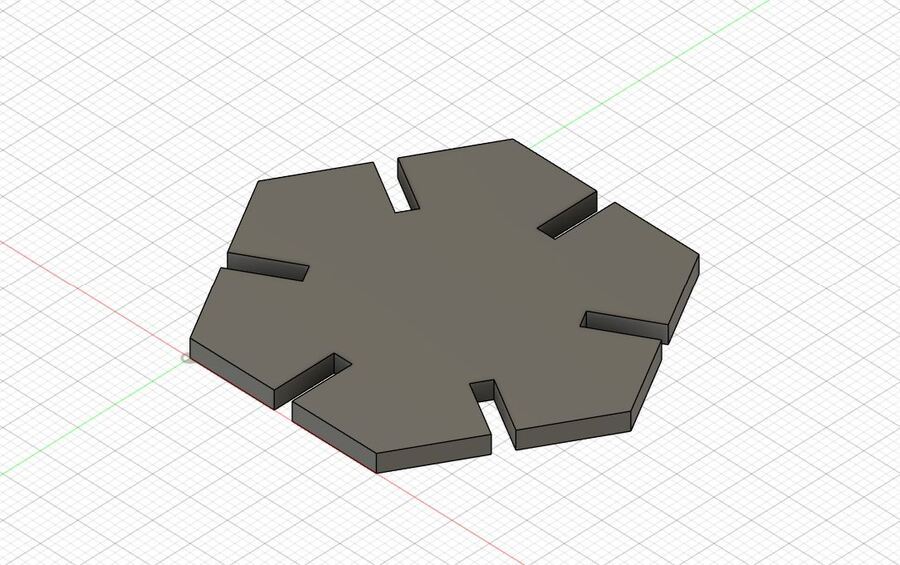
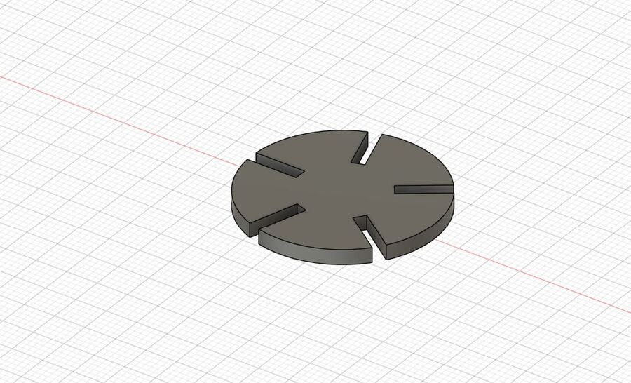
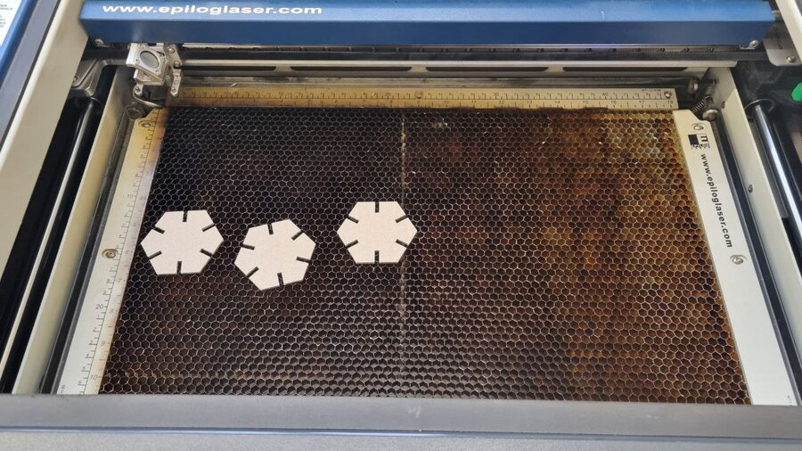
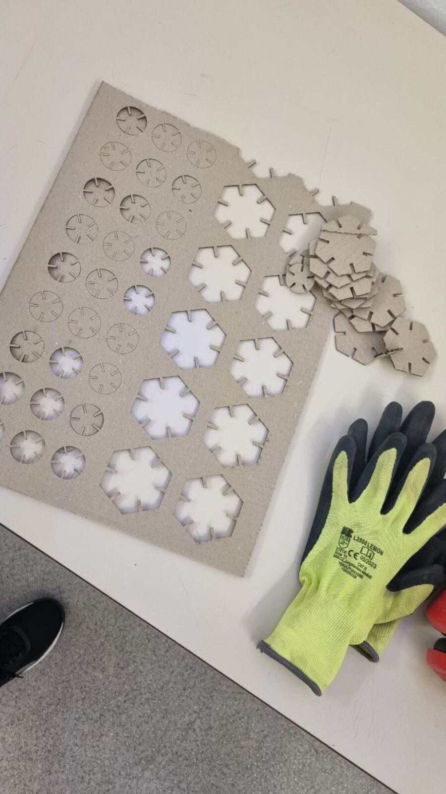
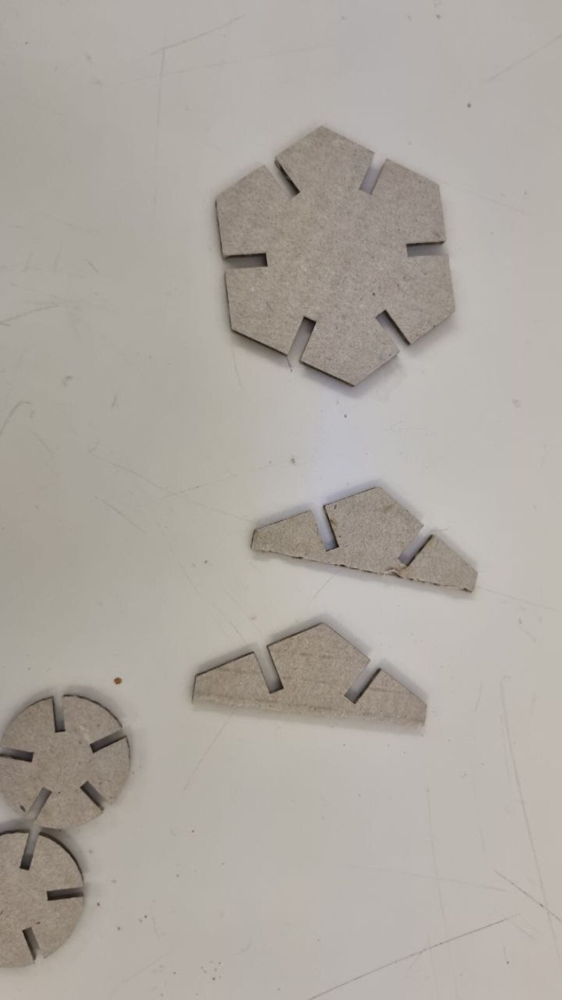
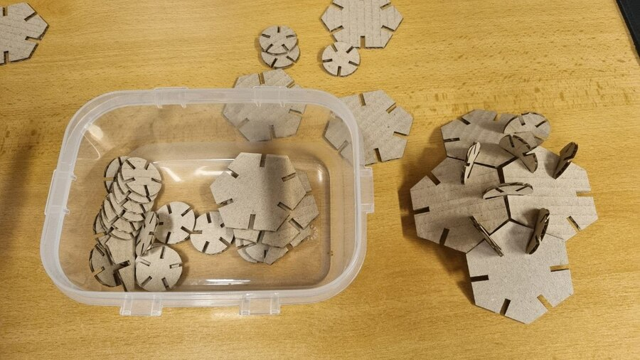
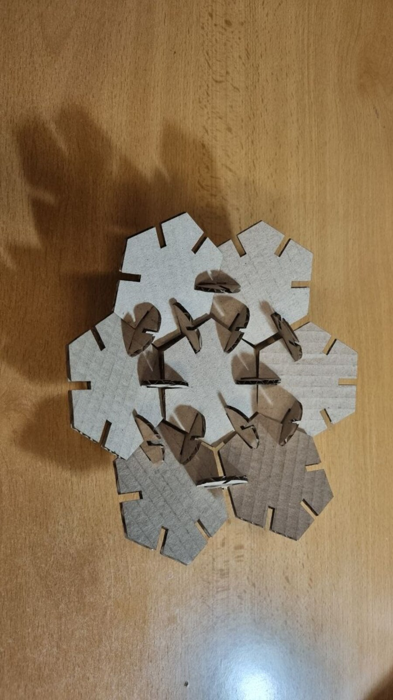
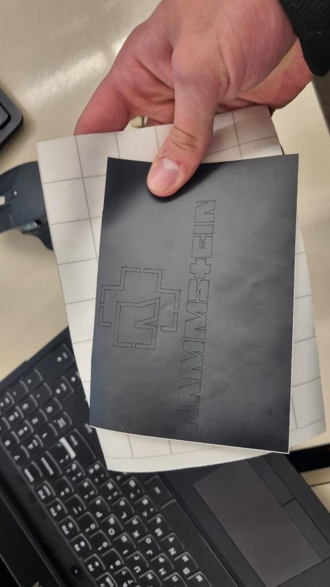

Week 2: 2D Laser cutting and stickers
Creating a palm tree and a sticker of the Ramstein logo
Creating a palm tree and a sticker of the Ramstein logo
Prerequisites
Firslty, I needed to install a Fusion 360 CAD from AutoCAD, that was available at Education license on Software CTU website. Also I needed Illustrator CC from Adobe, but I have had it preinstalled on my pc earlier. It is not required, but if you need it please check this link.
2D Laser cutting
Read the prerequisites above and verify you have Fusion360.
Our first goal was to created a 2D model in Fusion360 which will be further printed on 2D Laser cutter using cardboard with 2.4 mm thickness.
Preferably, it should consist of several parts that can be assembled in different ways.
Firstly, my ail was to make a 3D polyhedron out of 2D polygons, but as you’ll find out later, it failed. So instead, I came up with the idea of making a palm tree out of the polygons I printed.

CAD sketching
I sketched a hexagon in 2D with every side having a cutout and a circle with 5 cutouts evenly distributed around using Circular Pattern tool in CREATE section. The dimensions are indicated on image below.

After that I extruded them using Extrude tool to 2.4 mm thickness. This thickness will ensure parts to be connectable.

Printing
We loaded our .dxf files into Illustrator on pc connected to the laser cutter and started cutting. I wanted to cut 12 hexagons and 27 circles that will connect my hexagons. The cardboard I used turned out to be too small during the cutting process, so the laser did not cut 2 hexagons. This is something to pay attention to next time.
 
Here are the missed 2 parts described earlier.

Assembly
At home I tried to assemble all parts into a 3D polyhedron. But I realized, that chosen angles for positioning cutouts on cirles didn’t match the angles required for assembling such a geometric figure. So I assembled only small part of hexagons and it turned out to look like a palm tree, I liked it!


Sticker
My aim was to print out a sticker of Rammstein logo to stick it wherever I want. I found a raster image on internet, loaded it in Illustrator and used Image trase->Make. Then I edited it a bit using curves and points, then I scaled it and exported in svg format.
After printing I got a beautiful logo, all thing I have to do is to come up with the idea where to stick it.
